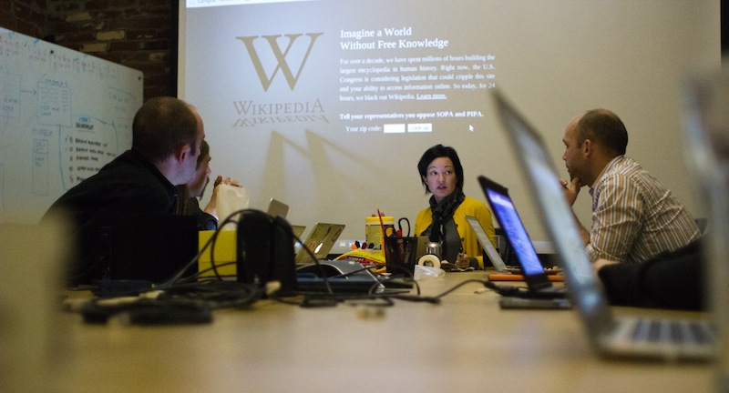
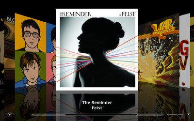

Wikimedia Foundation Coding Exercise
Contents
Who we are
At the Wikimedia Foundation, we are creative and motivated people who work in an open and collaborative environment. We are mission-driven and committed to making knowledge free [citation needed]. Are you? Much of the staff of the Foundation is from the Wikimedia community [citation needed]. We consider experience with the Wikimedia projects and with volunteer communities to be extremely valuable.
Where we are
The Wikimedia Foundation is based in San Francisco on Mission Street [citation needed].
Task
The task should take no more than 3 hours. During the task you have several challenges:
Challenge 1
Optimise this page for mobile browsing as well as desktop browsing without any horizontal scrolling. If you feel the urge improve the design of the page.Challenge 2
Enhance the page with one or more of the following features.- Table of Contents
- Certain articles are extremely long and contain several sub sections. On certain mobile devices it can be quite hard to return to other sections in an article. The challenge is to construct a mechanism with which a user can jump to any section in the page from wherever they are in the page.
- Cover flow
- When the user rotates the screen, convert the layout into a slide show where each slide is a section. The best solutions will resemble a cover flow
- 
- Full screen image preview
- Make it so that when a user clicks on an image in the page the image expands to take up the full screen. Use the title of the images as a caption. Allow the user to flick between all other images on the page. Images should appear in the order they appear in the document.
- Personal annotations
- Allow a user to add their own personal annotations within this document. Make sure that when the page is refreshed these annotations are still accessible.
- Add Location to page
- This article has no location. Where a device has geo location provide a mechanism for adding the users location to the article. Note there is no need for this location to persist across a page refresh. When doing this task it is extremely important that you give a nice user experience.
- Find on this page
- Develop a search function that takes a phrase and highlights text on the page which matches the phrase. (Essentially mimic the find function on your browser). Take care to think about the user experience!
- Citation needed
- Where a citation is needed allow a user to provide one. Make us extra happy if the new citation is saved and shown on a refresh.
- Report inaccuracy / spam
- Provide a method for a user to provide feedback on a spelling mistakes and inaccuracies in the current document. There are a couple of speling mistakes in this sentence for the purposse of this task. It is also common for Wikipedia articles to have factually incorrect information. Statements like Malaysia is in Africa, Canada is in North America [citation needed] and/or Sydney is the capital of Australia may be incorrect and in need of citations where there is dispute. You may add some some spam in the markup of this document provided it is just a text node to demonstrate your solution.
Your Solution
- You should make use of the entire 3 hour period. We will assume whatever you come up with took 3 hours. Don't worry if you go a little over or a little under that timeframe.
- Your solution must be purely css and javascript based and must reside in script.js and script.css. The contents of these files should be all your own work.
- You must assume that everything inside the #content element is generated by the server and cannot be changed however feel free to add markup outside this element where needed.
- You must not introduce any additional javascript libraries including jquery plugins.
- Use jQuery or native javascript - your choice
- Your solution should work in Google Chrome and be agnostic to the device size. It will also be tested in an iphone and android device.
- Your solution must run off a file:/// uri
Assessment
Your task will be assessed based on but not limited to or exclusively to:
- User experience - our users expect the best from us. How does your solution make them feel? Sad or happy.
- Appearance - if css is your thing show us how beautiful this page could be. Dare to be bold
- Coding style - you should assume your code must be near production quality as if you were sending it for a code review to an open source project. Take a look at the existing code and try to mimic it as much as possible.
- Completeness of solution - try and complete your solution rather than trying lots of the challenges. The more polished the better.
- Creativity of solution - make our jaws drop!
- Performance - this page might be loaded on a slow mobile connection. Think about page load as well as the capabilities of different devices that might access it.
- Simplicity of solution - sometimes simple is key but if it's too simple
- Use of CSS3 and HTML5 - show off what you can do in the latest browsers
- Adaptability to different device screen widths and resolutions